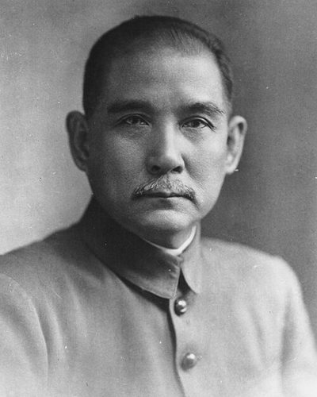

Ideologies / Nationalist
What is Three Principles of the People?
Three Principles of the People is a political ideology in the Nationalist family. In his 1924 lectures Sun set out three aims for China. Nationalism means freeing the country from foreign domination and binding its loose sand of clans into one nation. Democracy means a republic in which the people hold the powers of election, recall, initiative and referendum over a government of five branches. Livelihood means equalising land rights by taxing away rises in land value, and keeping large capital under state regulation.
Nationalism, democracy, the people's livelihood.
Defined from: Sun Yat-sen, The Three Principles of the People (lectures) (1924)
See how close you are to Three Principles of the People Dare a friend to answer as one


Where Three Principles of the People stands on 13 axes
Each axis runs from 0 to 100. A score of 50 is the middle. On a classic compass it sits in the Authoritarian Left quadrant.
| Axis | Position | Score | In words |
|---|---|---|---|
| EconomyMarket to Planned | 60 | Leans Planned | |
| OwnershipPrivate to Collective | 50 | Balanced | |
| RightsLiberty to Security | 55 | Balanced | |
| GovernmentDemocracy to Autocracy | 40 | Leans Democracy | |
| StructureDecentralised to Centralised | 70 | Strongly Centralised | |
| NationInternationalist to Nationalist | 85 | Very strongly Nationalist | |
| ImmigrationMulticulturalist to Assimilationist | 75 | Strongly Assimilationist | |
| ValuesProgressive to Traditional | 45 | Balanced | |
| TechnologyAccelerationist to Precautionary | 20 | Strongly Accelerationist | |
| EnvironmentIndustrialist to Environmentalist | 20 | Strongly Industrialist | |
| ReligionSecular to Religious | 15 | Very strongly Secular | |
| MilitaryPacifist to Militarist | 55 | Balanced | |
| TradeFree Trade to Protectionist | 70 | Strongly Protectionist |
Ideologies closest to Three Principles of the People
- Pan Turkism86% alike
- Political Zionism84% alike
- Gaullism83% alike
- Economic Nationalism83% alike
- Lassalleanism81% alike
Its opposite on this map is Tolstoyan Anarcho Pacifism, at 33%.
Parties near Three Principles of the People
Kuomintang (China) was the first party or movement to carry it, placed here from Three Principles of the People (1924).
- KuomintangChina. Three Principles of the People (1924)89% alike
- Arab Ba'ath PartySyria. Constitution of the Arab Ba'ath Party (1947)88% alike
- Uganda People's Congress of 1969Uganda. The Common Man's Charter (1969)84% alike
- National RallyFrance. 22 mesures pour 2022 (2022)84% alike
Common questions
What is Three Principles of the People?
Three Principles of the People is a political ideology in the Nationalist family. In his 1924 lectures Sun set out three aims for China. Nationalism means freeing the country from foreign domination and binding its loose sand of clans into one nation. Democracy means a republic in which the people hold the powers of election, recall, initiative and referendum over a government of five branches. Livelihood means equalising land rights by taxing away rises in land value, and keeping large capital under state regulation.
What does Three Principles of the People believe?
In one line: Nationalism, democracy, the people's livelihood. Its strongest positions are Nationalist, Secular, Accelerationist. In his 1924 lectures Sun set out three aims for China. Nationalism means freeing the country from foreign domination and binding its loose sand of clans into one nation. Democracy means a republic in which the people hold the powers of election, recall, initiative and referendum over a government of five branches. Livelihood means equalising land rights by taxing away rises in land value, and keeping large capital under state regulation.
Who founded Three Principles of the People?
Three Principles of the People is defined here from The Three Principles of the People (lectures) (1924) by Sun Yat-sen. The thinker most tied to it is Sun Yat-sen (1866 to 1925).
Is Three Principles of the People left wing or right wing?
On a classic two axis compass Three Principles of the People falls in the Authoritarian Left quadrant, which means the economic centre and the middle between libertarian and authoritarian. Left and right hide a lot, though, which is why EthosScales scores it on thirteen separate axes.
How is Three Principles of the People different from Pan Turkism?
They are close, at a 86% match. The biggest gaps are on Government, where Three Principles of the People scores 40 and Pan Turkism scores 65, and Technology, where Three Principles of the People scores 20 and Pan Turkism scores 35. On each axis, 0 is one end and 100 is the other.
Think this is wrong? Suggest a correction. The scores are editorial estimates.